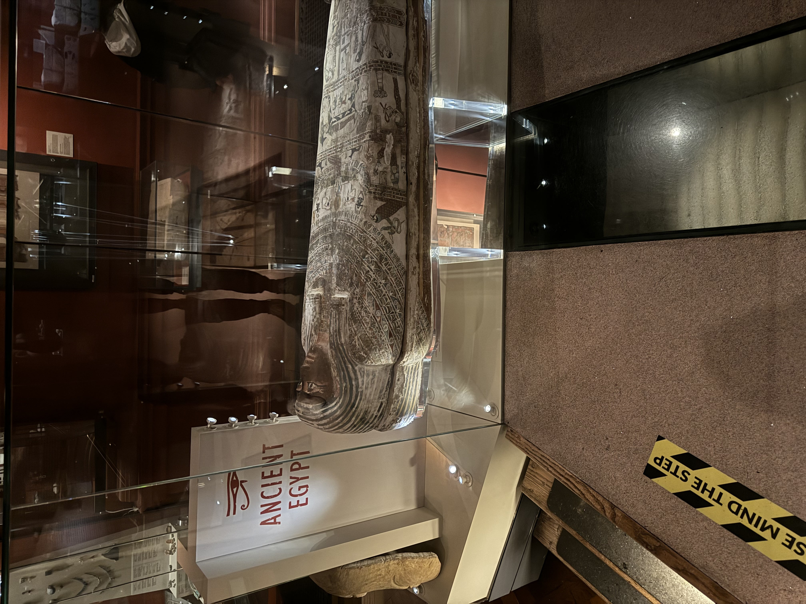
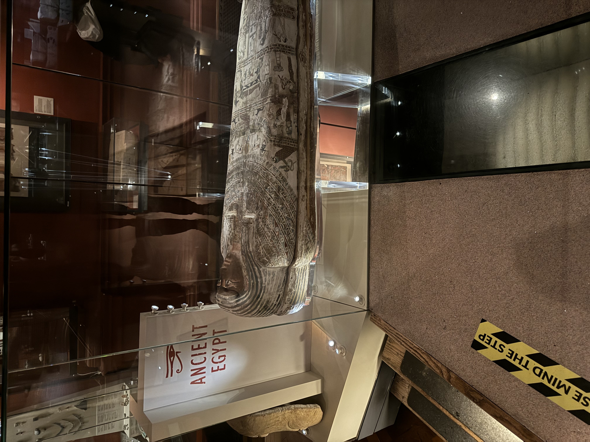
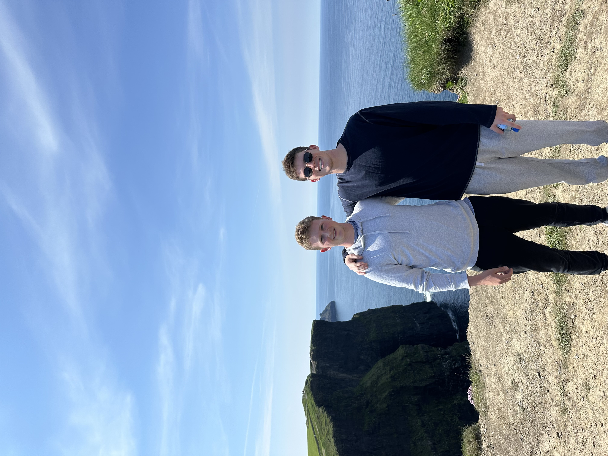
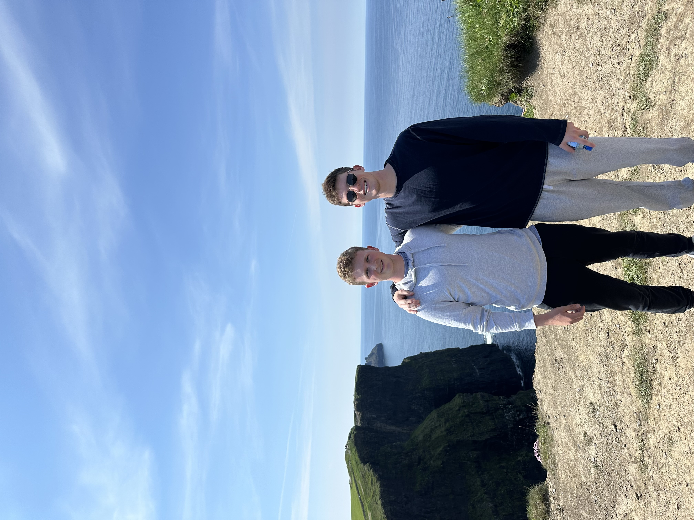

I got a glimpse of Dublin's rich history and vibrant culture, beginning my tour at the expansive and beautiful Phoenix Park, followed by a visit to the historic old barracks used in various wars throughout Dublin's history. The Arbour Hill Cemetery and Memorial, where people of Irish independence are commemorated, provided a sad moment yet great learning experience for all of us in the class.
The day concluded with a walk through Dublin's streets, where I soaked in the unique atmosphere and vibrant city life. I finished my first day of Dublin exploration with a quick dinner and a visit to a couple of Irish pubs which were reccommended to me. I truly enjoyed the traditional music and warm hospitality that I experienced during my first day in Dublin.
Here are some links about Dublin:


 



 
